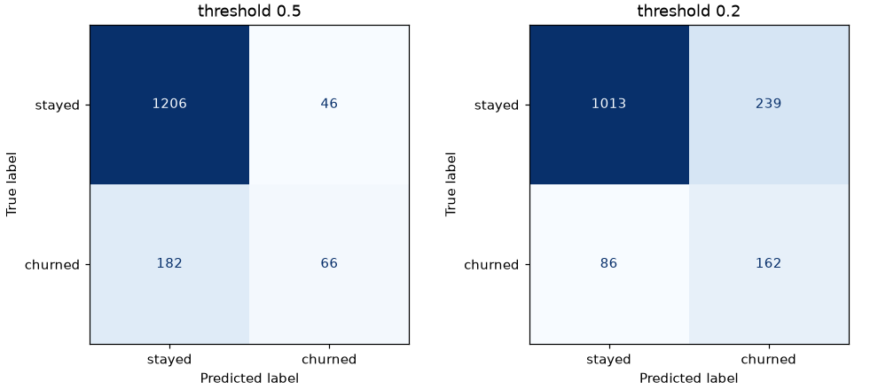
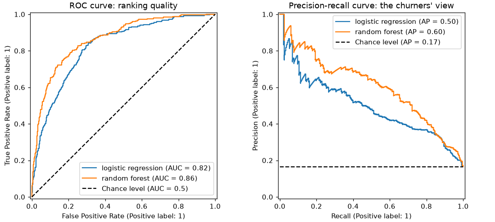
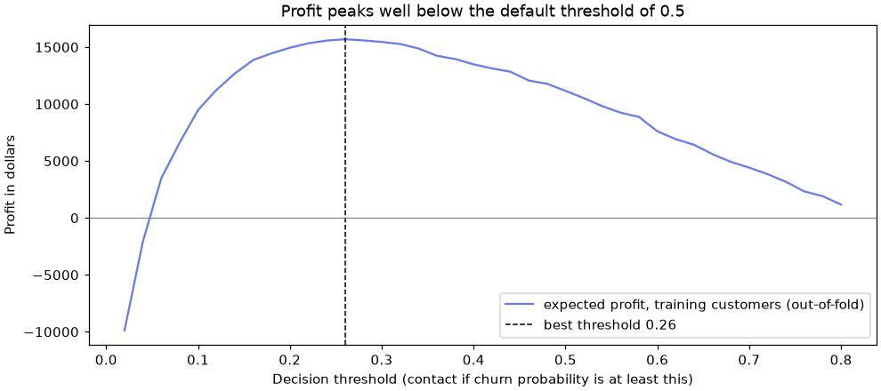

📏 Lesson 1.4: Metrics for Classification and Regression
Choose the number that answers the business question: who did we catch, who did we bother, what did it cost, and how far off is the forecast.
🎯 Learning Objectives
By the end of this lesson, you will be able to:
- Read a confusion matrix and compute precision, recall and F1, saying what each means for Pinecrest's retention team
- Move a classifier's decision threshold and explain the precision-recall trade-off it controls
- Use ROC AUC and average precision to judge how well a model ranks, and know when the precision-recall view is the honest one
- Choose a threshold from business costs with out-of-fold probabilities or
TunedThresholdClassifierCV, without peeking at the test set - Report MAE, RMSE and R² for a regression against a baseline, and avoid the MAPE trap on zero sales
In This Lesson
🎭 Why Accuracy Is Not Enough
In Lesson 1.1, logistic regression scored 84.8% accuracy and the do-nothing baseline scored 83.5%. Yet the same model ranked customers so well that its riskiest tenth churned at 57%. Accuracy hid almost everything that mattered, because it treats every right answer the same and every mistake the same. Pinecrest's retention team does not see it that way: missing a customer who was about to leave costs a lot, and calling a happy customer costs a little.
💡 Mental Model: The Smoke Alarm
A smoke alarm that never goes off is "right" on almost every day of the year, because almost every day has no fire. Nobody would call it a good alarm. What you want to know is: when there is a fire, does it go off (recall)? And when it goes off, is there really a fire (precision)? How sensitive to set it (the threshold) depends on what a false alarm costs compared with a missed fire. That is this whole lesson in one picture.
Set up the same split and two models from earlier lessons. Logistic regression gets its scaler inside a pipeline (Lesson 1.3).
import numpy as np
import pandas as pd
from sklearn.model_selection import train_test_split
from sklearn.pipeline import make_pipeline
from sklearn.preprocessing import StandardScaler
from sklearn.linear_model import LogisticRegression
from sklearn.ensemble import RandomForestClassifier
customers = pd.read_csv("data/customers_churn.csv")
features = ["tenure_months", "orders_12m", "spend_12m", "avg_order_value", "days_since_last_order",
"returns_12m", "return_rate", "support_tickets_12m", "discount_share", "app_user"]
X_train, X_test, y_train, y_test = train_test_split(
customers[features], customers["churned"], test_size=0.25, stratify=customers["churned"], random_state=42
)
logreg = make_pipeline(StandardScaler(), LogisticRegression()).fit(X_train, y_train)
forest = RandomForestClassifier(n_estimators=200, min_samples_leaf=5, random_state=42, n_jobs=-1).fit(X_train, y_train)
y_pred = logreg.predict(X_test)
proba = logreg.predict_proba(X_test)[:, 1]
print(f"accuracy {logreg.score(X_test, y_test):.3f}")
print(f"real churners in the test set: {y_test.sum()}, flagged by the model: {y_pred.sum()}")Output
accuracy 0.848
real churners in the test set: 248, flagged by the model: 112The test set holds 248 customers who really churned. At the default settings the model flags only 112 customers as churners, and accuracy cannot tell you how many of those 112 were right, or how many of the 248 were missed. The next two sections answer exactly those questions.
🧮 The Confusion Matrix
A binary classifier can be right in two ways and wrong in two ways. The confusion matrix counts all four. Calling churn the positive class (the thing you are looking for), the four cells mean:
scikit-learn uses the same layout: rows are the true classes, columns the predictions, both in sorted order (0 then 1). ravel() flattens the 2×2 array into the four counts in the order TN, FP, FN, TP.
from sklearn.metrics import confusion_matrix
cm = confusion_matrix(y_test, y_pred)
print(cm)
tn, fp, fn, tp = cm.ravel()
print(f"TN {tn} FP {fp} FN {fn} TP {tp}")Output
[[1206 46]
[ 182 66]]
TN 1206 FP 46 FN 182 TP 66Read it as the retention team would. Of the 112 customers the model would call, 66 were really about to leave (TP) and 46 were not (FP: wasted calls). Of the 248 real churners, the model found 66 and missed 182 (FN). The 1,206 true negatives are loyal customers correctly left alone, and they are most of why accuracy looked fine: 1,206 + 66 = 1,272 correct answers out of 1,500 is 84.8%.
🎯 Precision, Recall and F1
Two questions from the retention team turn the matrix into two numbers:
- Precision = TP / (TP + FP): "Of the customers we call, what share were really going to leave?" High precision means few wasted calls.
- Recall (also called sensitivity, or true positive rate) = TP / (TP + FN): "Of the customers who were going to leave, what share did we call?" High recall means few missed churners.
F1 combines them into one number, their harmonic mean: 2 × precision × recall / (precision + recall). The harmonic mean is dragged down by whichever of the two is worse, so a model cannot hide terrible recall behind great precision.
from sklearn.metrics import precision_score, recall_score, f1_score, classification_report
print(f"precision {precision_score(y_test, y_pred):.3f}")
print(f"recall {recall_score(y_test, y_pred):.3f}")
print(f"F1 {f1_score(y_test, y_pred):.3f}")
print()
print(classification_report(y_test, y_pred, target_names=["stayed", "churned"], digits=3))Output
precision 0.589
recall 0.266
F1 0.367
precision recall f1-score support
stayed 0.869 0.963 0.914 1252
churned 0.589 0.266 0.367 248
accuracy 0.848 1500
macro avg 0.729 0.615 0.640 1500
weighted avg 0.823 0.848 0.823 1500Precision 0.589: about six of every ten calls reach a real churner, which is a good hit rate for a retention campaign. Recall 0.266: the campaign reaches only about one churner in four. Whether that is acceptable depends on what a missed churner costs compared with a wasted call, which is the subject of the rest of this lesson.
classification_report prints precision, recall and F1 for each class (treating it as the positive one), the number of true cases (support), and two averages that the multiclass section explains. For churn, the row that matters is churned.
✅ Say It in Business Words
"Recall 0.266" is jargon. "We would reach about one churner in four, and six of every ten calls would reach someone who really was leaving" is a sentence a manager can act on. Practice translating every metric you report.
🎚️ Moving the Threshold
predict says "churn" whenever the churn probability is at least 0.5. Nothing about 0.5 is special: it is a default, not a decision. Pass a different threshold to the probabilities yourself and the confusion matrix changes. Lower the threshold and you flag more customers: recall rises, precision falls.
y_true = y_test.to_numpy()
rows = []
for threshold in [0.1, 0.2, 0.3, 0.4, 0.5, 0.6, 0.7]:
flagged = (proba >= threshold).astype(int)
rows.append({"threshold": threshold, "flagged": flagged.sum(),
"precision": precision_score(y_true, flagged),
"recall": recall_score(y_true, flagged),
"f1": f1_score(y_true, flagged)})
print(pd.DataFrame(rows).round(3).to_string(index=False))Output
threshold flagged precision recall f1
0.1 700 0.313 0.883 0.462
0.2 401 0.404 0.653 0.499
0.3 250 0.484 0.488 0.486
0.4 167 0.557 0.375 0.448
0.5 112 0.589 0.266 0.367
0.6 69 0.609 0.169 0.265
0.7 30 0.767 0.093 0.165At the default 0.5 the model is cautious: 112 flags, precision 0.589, recall 0.266. At 0.2 it flags 401 customers and catches 65% of the churners, but only 40% of its calls hit. At 0.1 it catches 88% of churners by calling almost half the test set. No row is "correct": each is a different trade between wasted calls and missed churners. F1 peaks around 0.2 to 0.3, but F1 does not know Pinecrest's costs either. The confusion matrices for 0.5 and 0.2 side by side make the trade visible.
import matplotlib.pyplot as plt
from sklearn.metrics import ConfusionMatrixDisplay
fig, axes = plt.subplots(1, 2, figsize=(9, 4), layout="constrained")
for ax, threshold in zip(axes, [0.5, 0.2]):
ConfusionMatrixDisplay.from_predictions(
y_test, (proba >= threshold).astype(int), display_labels=["stayed", "churned"],
ax=ax, colorbar=False, cmap="Blues",
)
ax.set_title(f"threshold {threshold}")
plt.show()
To make a threshold part of the model itself (so that predict uses it, and it gets saved with the model), wrap the model in FixedThresholdClassifier:
from sklearn.model_selection import FixedThresholdClassifier
logreg_02 = FixedThresholdClassifier(logreg, threshold=0.2).fit(X_train, y_train)
print(logreg_02.predict(X_test).sum(), "flagged")
print(f"recall {recall_score(y_test, logreg_02.predict(X_test)):.3f}")Output
401 flagged
recall 0.653⚠️ The Threshold Is a Business Decision
The model's job is to produce good probabilities, or at least a good ranking. Where to cut is decided by costs, capacity and risk appetite, and it can change next month without retraining. Just never choose the threshold by looking at the test set: that is tuning on the test set. The costs section shows how to choose it on training data.
📈 ROC and Precision-Recall Curves
The threshold table is a slice through a continuum. Two curves show every threshold at once, and each has a one-number summary that does not depend on any threshold:
- The ROC curve plots recall (the true positive rate) against the false positive rate, FP / (FP + TN): the share of loyal customers wrongly flagged. Its area, ROC AUC, is the probability that a randomly chosen churner gets a higher score than a randomly chosen non-churner. 0.5 is a coin flip, 1.0 is a perfect ranking.
- The precision-recall curve plots precision against recall. Its summary, average precision (AP), is roughly the area under it. A random ranking scores the share of positives, here 0.165, not 0.5.
from sklearn.dummy import DummyClassifier
from sklearn.metrics import roc_auc_score, average_precision_score
dummy = DummyClassifier(strategy="prior").fit(X_train, y_train)
for name, model in [("baseline", dummy), ("logistic regression", logreg), ("random forest", forest)]:
p = model.predict_proba(X_test)[:, 1]
print(f"{name:20s} ROC AUC {roc_auc_score(y_test, p):.3f} average precision {average_precision_score(y_test, p):.3f}")Output
baseline ROC AUC 0.500 average precision 0.165
logistic regression ROC AUC 0.823 average precision 0.497
random forest ROC AUC 0.865 average precision 0.603The "random churner versus random non-churner" reading of AUC is exact, and you can check it by brute force: compare every churner's probability with every non-churner's and count how often the churner wins.
churner_p = proba[y_true == 1]
stayer_p = proba[y_true == 0]
wins = (churner_p[:, None] > stayer_p[None, :]).mean()
print(f"{len(churner_p)} x {len(stayer_p)} pairs, churner ranked higher in {wins:.3f} of them")Output
248 x 1252 pairs, churner ranked higher in 0.823 of themfrom sklearn.metrics import RocCurveDisplay, PrecisionRecallDisplay
fig, (ax_roc, ax_pr) = plt.subplots(1, 2, figsize=(10, 4.5), layout="constrained")
for i, (name, model) in enumerate([("logistic regression", logreg), ("random forest", forest)]):
RocCurveDisplay.from_estimator(model, X_test, y_test, name=name, ax=ax_roc, plot_chance_level=(i == 1))
PrecisionRecallDisplay.from_estimator(model, X_test, y_test, name=name, ax=ax_pr, plot_chance_level=(i == 1))
ax_roc.set_title("ROC curve: ranking quality")
ax_pr.set_title("Precision-recall curve: the churners' view")
ax_pr.legend(loc="upper right")
plt.show()
💡 Which Curve When?
ROC AUC ignores how rare the positive class is, which makes it handy for comparing models across datasets, but it can look comfortable even when most flagged cases are false alarms. When positives are rare and the positives are what you care about (fraud at 0.9%, a rare disease, a rare failure), the precision-recall curve and average precision tell the more honest story. Exercise 3 shows the difference on Pinecrest's payment data.
💰 Thresholds from Costs
The best threshold comes from what each cell of the confusion matrix is worth. Suppose Pinecrest's numbers are:
- Each retention offer costs $15 (a $10 coupon plus staff time), whoever receives it: every true positive and every false positive costs $15.
- An offer that reaches a real churner is worth $60 on average: some accept and stay, some leave anyway.
- Customers you do not contact cost nothing extra (a missed churner is lost either way; it is the baseline).
So the profit of a campaign is 60 × TP - 15 × (TP + FP). If the probabilities were perfectly calibrated, you would contact everyone whose churn probability is above 15 / 60 = 0.25, the break-even point where the expected value of a call equals its cost. Real probabilities are only roughly calibrated, so the better route is to measure the profit directly at many thresholds and pick the best one, using data the test set has not seen.
OFFER_COST = 15 # dollars per customer contacted
CHURNER_VALUE = 60 # expected dollars per real churner contacted
def campaign_profit(y_true, flagged):
"""Expected profit of contacting every flagged customer."""
y_true, flagged = np.asarray(y_true), np.asarray(flagged)
tp = ((flagged == 1) & (y_true == 1)).sum()
return CHURNER_VALUE * tp - OFFER_COST * flagged.sum()
print("contact nobody ", campaign_profit(y_test, np.zeros(len(y_test), dtype=int)))
print("contact everyone ", campaign_profit(y_test, np.ones(len(y_test), dtype=int)))
print("threshold 0.5 ", campaign_profit(y_test, y_pred))Output
contact nobody 0
contact everyone -7620
threshold 0.5 2280Contacting everyone loses $7,620: offers to 1,252 loyal customers swamp the value of reaching all 248 churners. The default threshold earns $2,280. The best threshold is somewhere between, and you must find it without looking at these test-set numbers again.
TunedThresholdClassifierCV automates the honest search. It cross-validates the model on the training data, tries 100 thresholds in each fold, and keeps the one with the best average score. Turn the profit function into a scorer with make_scorer (scorers receive the true labels and the 0/1 predictions):
from sklearn.metrics import make_scorer
from sklearn.model_selection import StratifiedKFold, TunedThresholdClassifierCV
profit_scorer = make_scorer(campaign_profit)
cv = StratifiedKFold(5, shuffle=True, random_state=42)
tuned = TunedThresholdClassifierCV(logreg, scoring=profit_scorer, cv=cv).fit(X_train, y_train)
print(f"chosen threshold {tuned.best_threshold_:.3f}")
print(f"mean profit per validation fold (900 customers) {tuned.best_score_:,.0f}")
print(f"test-set profit {campaign_profit(y_test, tuned.predict(X_test)):,}")Output
chosen threshold 0.245
mean profit per validation fold (900 customers) 2,603
test-set profit 3,555The tuner chose 0.245, close to the break-even probability of 0.25, which suggests the logistic regression's probabilities are reasonably calibrated. On the test set the tuned model earns $3,555, more than half again the $2,280 of the default threshold, from the same model with the same probabilities. Only the decision rule changed. (The fold profit is for 900 customers and the test profit for 1,500, so the two numbers are not directly comparable.)
⚠️ Who Gets Targeted Matters Too
A threshold decides who receives an offer, and a model trained on history can learn that some groups of customers "deserve" fewer offers for reasons that have little to do with their behavior. Before a campaign goes live, look at who is flagged and who is not, for example by store or age group, and ask whether the difference is justified. Lesson 7.3 adds a short fairness check to this habit.
🧩 More Than Two Classes
Every metric so far needs a "positive" class. With three or more classes, scikit-learn computes the metric once per class (that class against all others) and then averages. How it averages matters. To see why, predict each customer's loyalty_tier (Basic, Silver or Gold) from behavior alone, leaving out spend and tenure, which define the tier. Gold is the rare class: 8% of customers.
tier_features = ["days_since_last_order", "orders_12m", "discount_share", "app_user",
"support_tickets_12m", "return_rate"]
Xt_train, Xt_test, yt_train, yt_test = train_test_split(
customers[tier_features], customers["loyalty_tier"], test_size=0.25,
stratify=customers["loyalty_tier"], random_state=42,
)
tier_model = make_pipeline(StandardScaler(), LogisticRegression()).fit(Xt_train, yt_train)
print(classification_report(yt_test, tier_model.predict(Xt_test), digits=3))Output
precision recall f1-score support
Basic 0.640 0.808 0.714 709
Gold 0.789 0.126 0.217 119
Silver 0.628 0.548 0.585 672
accuracy 0.637 1500
macro avg 0.686 0.494 0.506 1500
weighted avg 0.647 0.637 0.617 1500The model finds only about one Gold customer in eight (Gold recall 0.126). The two averages tell that story differently:
- Macro average: the plain mean over classes, so tiny Gold counts as much as huge Basic. Macro F1 0.506 exposes the weak class.
- Weighted average: weighted by support, so it is dominated by the big classes. Weighted F1 0.617 looks better because Gold has only 119 of 1,500 customers.
If every class matters (finding Gold customers for a VIP program, say), report the macro average and the per-class rows. In scorer names this is scoring="f1_macro" or "recall_macro"; plain "f1" only works for two classes.
📐 Regression Metrics
When the target is a number, there is no confusion matrix: every prediction is off by some amount, the residual. Regression metrics summarize the residuals:
| Metric | Formula, in words | Read it as |
|---|---|---|
| MAE | mean of |error| | "off by this many units, on average", in the target's units |
| RMSE | square root of the mean of error² | like MAE, but big misses count extra; always at least the MAE |
| R² | 1 - (squared error of the model / squared error of predicting the mean) | share of the variation explained: 1 is perfect, 0 is "no better than the mean", below 0 is worse |
| Median absolute error | median of |error| | the typical miss, ignoring outliers completely |
The difference between MAE and RMSE is easiest to see on two made-up sets of five errors with the same total:
steady = np.array([5, 5, 5, 5, 5])
one_big_miss = np.array([0, 0, 0, 0, 25])
for name, errors in [("steady", steady), ("one big miss", one_big_miss)]:
print(f"{name:13s} MAE {np.abs(errors).mean():.2f} RMSE {np.sqrt((errors ** 2).mean()):.2f}")Output
steady MAE 5.00 RMSE 5.00
one big miss MAE 5.00 RMSE 11.18Same MAE, very different RMSE. If one huge miss is worse than five small ones (an empty shelf on Black Friday), RMSE describes your pain better. If every unit of error costs the same, MAE does.
Now the real thing: forecast units_sold for 2025 from a model trained on 2024 (a time-based split, Lesson 1.2), and compare a gradient-boosting model with two baselines: the overall training mean, and a smarter naive forecast that predicts each product-and-store pair's 2024 average.
from sklearn.dummy import DummyRegressor
from sklearn.ensemble import HistGradientBoostingRegressor
from sklearn.metrics import mean_absolute_error, root_mean_squared_error, r2_score
demand = pd.read_csv("data/weekly_demand.csv")
demand_features = ["price", "list_price", "discount_pct", "promo", "holiday_week",
"avg_high_temp_f", "store_sqft", "week_of_year"]
train_d = demand[demand["year"] == 2024]
test_d = demand[demand["year"] == 2025]
pair_mean = train_d.groupby(["product_id", "store"])["units_sold"].mean().rename("pair_mean")
predictions = {
"overall mean": DummyRegressor().fit(train_d[demand_features], train_d["units_sold"]).predict(test_d[demand_features]),
"product-store mean": test_d.join(pair_mean, on=["product_id", "store"])["pair_mean"].to_numpy(),
}
hgb = HistGradientBoostingRegressor(random_state=42).fit(train_d[demand_features], train_d["units_sold"])
predictions["gradient boosting"] = hgb.predict(test_d[demand_features])
y_d = test_d["units_sold"]
for name, pred in predictions.items():
print(f"{name:19s} MAE {mean_absolute_error(y_d, pred):6.2f} RMSE {root_mean_squared_error(y_d, pred):6.2f} "
f"R2 {r2_score(y_d, pred):6.3f}")Output
overall mean MAE 17.13 RMSE 26.21 R2 -0.006
product-store mean MAE 12.95 RMSE 20.45 R2 0.388
gradient boosting MAE 10.17 RMSE 16.19 R2 0.616Predicting the overall mean gives an R² of about 0, as it should, and an MAE of 17.13 units per week. The naive product-and-store average already cuts the error by a quarter. Gradient boosting cuts it to 10.17 units, with R² 0.616. That comparison is the honest claim: "about 2.8 units per week better than a forecast anyone could make in a spreadsheet", not "R² 0.62". RMSE is about 55% larger than MAE for every model, a sign that some weeks are missed by a lot (holiday spikes, and weeks with zero sales). Lesson 2.1 shows how to give the model the product and store themselves as category columns, which lowers the error further.
💡 R² Depends on the Data, MAE Does Not Lie About Units
R² compares the model with "predict the mean of this test set". The same model can score a high R² on data with a lot of variation and a low one on calm data, while its MAE is identical. Report R² alongside an error in real units, never alone. And note that root_mean_squared_error is its own function: the older mean_squared_error(..., squared=False) no longer exists.
🧭 Choosing a Metric
Pick the metric before you train anything, from the question the model must answer. Then use the matching scorer name in cross_val_score, cross_validate and, later, tuning. For a classifier, the diagram below the table is a quick first pass.
| Situation | Report | Scorer name |
|---|---|---|
| Balanced classes, all errors cost the same | accuracy | "accuracy" |
| You will rank and act on the top of the list | ROC AUC, plus precision at your capacity | "roc_auc" |
| Rare positives that you care about | average precision, precision and recall | "average_precision" |
| A missed positive is much worse than a false alarm | recall (at acceptable precision), F-beta with beta above 1 | "recall" |
| Known costs per cell | profit or cost, threshold tuned on training data | make_scorer(your_function) |
| Several classes, all important | macro F1 and per-class recall | "f1_macro" |
| Regression, every unit of error costs the same | MAE, against a naive baseline | "neg_mean_absolute_error" |
| Regression, big misses are much worse | RMSE | "neg_root_mean_squared_error" |
⚠️ Common Mistakes
Metric mistakes are dangerous because most of them return a perfectly reasonable-looking number.
1. AUC from Labels Instead of Probabilities
print(f"from predict: {roc_auc_score(y_test, logreg.predict(X_test)):.3f}")
print(f"from predict_proba: {roc_auc_score(y_test, logreg.predict_proba(X_test)[:, 1]):.3f}")Output (no error, and that is the problem)
from predict: 0.615
from predict_proba: 0.823What happened: ROC AUC measures a ranking. Hard 0/1 labels have only two "ranks", so the curve collapses to a single point and the area underestimates the model badly. Fix: pass scores: predict_proba(X)[:, 1] (or decision_function). The same goes for average_precision_score.
2. Passing Both Probability Columns
roc_auc_score(y_test, logreg.predict_proba(X_test))Error
ValueError: y should be a 1d array, got an array of shape (1500, 2) instead.What it means: for a binary target, the metric expects one score per row: the probability of the positive class. Fix: take column 1, predict_proba(X)[:, 1].
3. Swapping the Arguments
print(f"precision_score(y_test, y_pred) = {precision_score(y_test, y_pred):.3f}")
print(f"precision_score(y_pred, y_test) = {precision_score(y_pred, y_test):.3f} (this is the recall)")Output (no error, and that is the problem)
precision_score(y_test, y_pred) = 0.589
precision_score(y_pred, y_test) = 0.266 (this is the recall)What happened: every scikit-learn metric takes the truth first and the prediction second. Swapped, precision becomes recall (and vice versa) without any warning. Fix: always write metric(y_true, y_pred); using keyword arguments, precision_score(y_true=..., y_pred=...), makes it impossible to get wrong.
4. Precision of a Model That Never Says Yes
import warnings
with warnings.catch_warnings(record=True) as caught:
warnings.simplefilter("always")
p = precision_score(y_test, dummy.predict(X_test))
print(p)
print(caught[0].category.__name__)
print(str(caught[0].message).split(".")[0])Output
0.0
UndefinedMetricWarning
Precision is ill-defined and being set to 0What it means: the baseline never predicts churn, so TP + FP = 0 and precision is 0/0. scikit-learn reports 0.0 and warns. Fix: nothing is broken; the warning tells you the model never flags anyone. If you expect this case, pass zero_division=0 to silence it on purpose.
5. MAPE on Data with Zeros
from sklearn.metrics import mean_absolute_percentage_error
print(f"zero-sales weeks in 2025: {(y_d == 0).sum()}")
print(f"MAPE: {mean_absolute_percentage_error(y_d, predictions['gradient boosting']):,.0f}")Output (no error, and that is the problem)
zero-sales weeks in 2025: 105
MAPE: 1,263,687,238,250,694What happened: the mean absolute percentage error divides each error by the true value. A week with 0 real sales and a forecast of 3 is an infinite percentage miss, so scikit-learn divides by a tiny number instead and the result explodes. (It is a fraction, not a percent: 0.25 would mean 25%.) Fix: with zeros or near-zeros in the target, use MAE, or a scale-free alternative such as MAE divided by the mean of the target.
6. Text Labels Without a pos_label
text_true = y_test.map({0: "stayed", 1: "churned"})
text_pred = pd.Series(y_pred, index=y_test.index).map({0: "stayed", 1: "churned"})
precision_score(text_true, text_pred)Error
ValueError: pos_label=1 is not a valid label. It should be one of ['churned' 'stayed']What it means: with labels 0 and 1, scikit-learn assumes 1 is the positive class. With text labels it cannot guess which one you are looking for. Fix: say so: precision_score(text_true, text_pred, pos_label="churned").
🛠️ Project: Plan the Retention Campaign
Pinecrest will send retention offers next month, with the costs from this lesson ($15 per offer, $60 per real churner reached). Your job: choose the decision threshold for the random-forest model using only the training customers, report the expected profit on the test set once, compare it with the obvious alternatives, and produce a call list for a team that can only make 150 calls. Work in a fresh notebook, lesson_1_4_project. Allow about 35 minutes.
🛠️ Step 1: Load, split and define the model (5 min)
Keep customer_id with the test rows, because the call list needs it.
import numpy as np
import pandas as pd
from sklearn.model_selection import train_test_split, StratifiedKFold, cross_val_predict
from sklearn.ensemble import RandomForestClassifier
customers = pd.read_csv("data/customers_churn.csv")
features = ["tenure_months", "orders_12m", "spend_12m", "avg_order_value", "days_since_last_order",
"returns_12m", "return_rate", "support_tickets_12m", "discount_share", "app_user"]
train, test = train_test_split(customers, test_size=0.25, stratify=customers["churned"], random_state=42)
X_train, y_train = train[features], train["churned"]
X_test, y_test = test[features], test["churned"]
forest = RandomForestClassifier(n_estimators=200, min_samples_leaf=5, random_state=42, n_jobs=-1)
OFFER_COST, CHURNER_VALUE = 15, 60
print(len(train), len(test), f"break-even probability {OFFER_COST / CHURNER_VALUE:.2f}")Output
4500 1500 break-even probability 0.25🛠️ Step 2: Out-of-fold probabilities for the training customers (5 min)
Use cross_val_predict (Lesson 1.3) so that every training customer gets a probability from a model that did not see them.
cv = StratifiedKFold(5, shuffle=True, random_state=42)
oof = cross_val_predict(forest, X_train, y_train, cv=cv, method="predict_proba")[:, 1]
print(oof[:5].round(3), f"mean {oof.mean():.3f}")Output
[0.185 0.005 0.191 0.008 0.494] mean 0.166🛠️ Step 3: Draw the profit curve and choose the threshold (10 min)
Compute the campaign profit on the training customers for thresholds from 0.02 to 0.80, and pick the best.
import matplotlib.pyplot as plt
def campaign_profit(y_true, flagged):
y_true, flagged = np.asarray(y_true), np.asarray(flagged)
tp = ((flagged == 1) & (y_true == 1)).sum()
return CHURNER_VALUE * tp - OFFER_COST * flagged.sum()
thresholds = np.round(np.arange(0.02, 0.81, 0.02), 2)
profits = np.array([campaign_profit(y_train, (oof >= t).astype(int)) for t in thresholds])
best_t = thresholds[profits.argmax()]
print(f"best threshold {best_t:.2f}: training profit {profits.max():,} "
f"(threshold 0.5: {profits[thresholds == 0.5][0]:,})")
fig, ax = plt.subplots(figsize=(9, 4), layout="constrained")
ax.plot(thresholds, profits, color="#667eea", label="expected profit, training customers (out-of-fold)")
ax.axvline(best_t, color="black", linestyle="--", linewidth=1, label=f"best threshold {best_t:.2f}")
ax.axhline(0, color="gray", linewidth=0.8)
ax.set_xlabel("Decision threshold (contact if churn probability is at least this)")
ax.set_ylabel("Profit in dollars")
ax.set_title("Profit peaks well below the default threshold of 0.5")
ax.legend()
plt.show()Output
best threshold 0.26: training profit 15,690 (threshold 0.5: 11,160)
🛠️ Step 4: Fit on all training rows and score the test set once (5 min)
Now compare four policies on the test customers: the chosen threshold, the default 0.5, contacting everyone, and contacting nobody.
from sklearn.metrics import precision_score, recall_score
forest.fit(X_train, y_train)
test_proba = forest.predict_proba(X_test)[:, 1]
policies = {
f"threshold {best_t:.2f}": (test_proba >= best_t).astype(int),
"threshold 0.50": (test_proba >= 0.5).astype(int),
"contact everyone": np.ones(len(y_test), dtype=int),
"contact nobody": np.zeros(len(y_test), dtype=int),
}
for name, flagged in policies.items():
print(f"{name:17s} offers {flagged.sum():5d} precision {precision_score(y_test, flagged, zero_division=0):.3f} "
f"recall {recall_score(y_test, flagged):.3f} profit {campaign_profit(y_test, flagged):7,}")Output
threshold 0.26 offers 343 precision 0.513 recall 0.710 profit 5,415
threshold 0.50 offers 139 precision 0.705 recall 0.395 profit 3,795
contact everyone offers 1500 precision 0.165 recall 1.000 profit -7,620
contact nobody offers 0 precision 0.000 recall 0.000 profit 0The threshold chosen on training data earns $5,415 on the test customers, against $3,795 at the default 0.5 and a loss of $7,620 for contacting everyone. It does so by catching 71% of the churners with about half of the offers landing on real churners. The forest earns more than the logistic regression in the costs section ($3,555) because it ranks churners better, which is the link between a higher average precision and real money.
🛠️ Step 5: Plan for limited capacity (5 min)
The care team can make only 150 calls. With a fixed capacity, the threshold no longer matters: you call the 150 highest-risk customers, and the metric that matters is precision at 150.
calls = test[["customer_id", "churned"]].assign(churn_probability=test_proba).nlargest(150, "churn_probability")
reached = calls["churned"].sum()
print(f"precision at 150: {reached / 150:.3f} ({reached} real churners reached)")
print(f"profit of the 150 calls: {CHURNER_VALUE * reached - OFFER_COST * 150:,}")
print(f"lowest probability on the list: {calls['churn_probability'].min():.3f}")Output
precision at 150: 0.687 (103 real churners reached)
profit of the 150 calls: 3,930
lowest probability on the list: 0.479Calling the top 150 reaches 103 real churners: 69% precision, against 16.5% for a random list. Every customer on the list has a churn probability of at least 0.479, well above break-even, so with a 150-call team the capacity, not the threshold, is the binding limit. If the team could make about 340 calls, the profit-maximizing threshold would become the limit instead.
🛠️ Step 6: Save the call list and the summary (5 min)
The list for the care team contains IDs and probabilities only, not the outcome column.
calls[["customer_id", "churn_probability"]].round(3).to_csv("retention_calls.csv", index=False)
chosen = policies[f"threshold {best_t:.2f}"]
print(f"""Retention campaign plan
Threshold (chosen on training data) : {best_t:.2f} (break-even {OFFER_COST / CHURNER_VALUE:.2f})
Test-set profit at that threshold : {campaign_profit(y_test, chosen):,} vs {campaign_profit(y_test, policies['threshold 0.50']):,} at 0.5
Capacity plan : 150 calls, precision {reached / 150:.3f}
Saved : retention_calls.csv ({len(calls)} rows)""")Output
Retention campaign plan
Threshold (chosen on training data) : 0.26 (break-even 0.25)
Test-set profit at that threshold : 5,415 vs 3,795 at 0.5
Capacity plan : 150 calls, precision 0.687
Saved : retention_calls.csv (150 rows)✅ Project Completion Checklist
- The threshold was chosen from out-of-fold probabilities on the training customers only
- Your profit curve has a clear peak, and you can say why it sits near the break-even probability
- The test set was used once, to compare four policies with precision, recall and profit
- You can explain in one sentence why the tuned threshold beats both 0.5 and "contact everyone"
- The 150-call list is ranked by probability and you know its precision
retention_calls.csvholds IDs and probabilities, and no outcome column
🏋️ Hands-on Exercises
These continue in the project notebook, so X_train, y_train, oof, test_proba and campaign_profit already exist.
🏋️ Exercise 1: When Recall Matters More
The F-beta score generalizes F1: with beta=2, recall counts twice as much as precision. Using the out-of-fold probabilities oof, find the threshold (0.05 to 0.80 in steps of 0.05) that maximizes F1 and the one that maximizes F2 (fbeta_score(y, flagged, beta=2)). Which threshold is lower, and why?
💡 Hint
Lower thresholds flag more customers, which raises recall. Which score rewards recall more?
✅ Solution
from sklearn.metrics import f1_score, fbeta_score
grid = np.round(np.arange(0.05, 0.81, 0.05), 2)
f1s = [f1_score(y_train, (oof >= t).astype(int)) for t in grid]
f2s = [fbeta_score(y_train, (oof >= t).astype(int), beta=2) for t in grid]
print(f"best F1 {max(f1s):.3f} at threshold {grid[np.argmax(f1s)]:.2f}")
print(f"best F2 {max(f2s):.3f} at threshold {grid[np.argmax(f2s)]:.2f}")Output
best F1 0.588 at threshold 0.30
best F2 0.679 at threshold 0.15F2 picks a lower threshold (0.15) than F1 (0.30), because it values recall twice as much and a lower threshold buys recall. Neither is "right": choosing beta is a statement about how much worse a missed churner is than a wasted call, which is why a cost-based score is better when you can estimate the costs.
🏋️ Exercise 2: Where Does the Forecast Miss?
Using the demand lesson code (test_d and predictions exist if you ran the lesson notebook; otherwise recreate them), compute the gradient-boosting model's MAE for each category in 2025, sorted from worst to best. Then express each as a share of that category's average weekly sales. Which category is hardest in absolute units, and which in relative terms?
💡 Hint
Put the absolute errors in a column: test_d.assign(abs_err=...), then groupby("category").agg(...) with the mean error and the mean sales.
✅ Solution
errors = test_d.assign(abs_err=(test_d["units_sold"] - predictions["gradient boosting"]).abs())
by_cat = errors.groupby("category").agg(mae=("abs_err", "mean"), mean_sales=("units_sold", "mean"))
by_cat["mae_share"] = by_cat["mae"] / by_cat["mean_sales"]
print(by_cat.sort_values("mae", ascending=False).round(2))Output
mae mean_sales mae_share
category
Camp Kitchen 13.23 36.87 0.36
Footwear 12.97 45.55 0.28
Snow 11.01 12.25 0.90
Accessories 10.00 29.83 0.34
Climbing 9.89 19.17 0.52
Apparel 9.66 25.60 0.38
Sleeping 8.97 19.29 0.47
Tents 8.26 18.36 0.45
Packs 6.14 18.27 0.34Camp Kitchen has the largest error in units (13.2 per week), but it is also a high-volume category, so the error is about a third of its typical week. Snow is the opposite: an error of 11 units on an average of 12 units per week, 90% in relative terms, because snow gear sells almost nothing in summer and a lot in winter. The worst category depends on which kind of error you report, so report both when categories differ in volume.
🏋️ Exercise 3: ROC versus Precision-Recall on Rare Fraud
Load data/transactions.csv (0.9% fraud). Split 70/30, stratified, random_state=42. Train a scaled logistic regression on the numeric columns ["account_age_days", "amount", "hour", "items", "device_new", "billing_shipping_mismatch", "country_mismatch", "card_attempts", "velocity_24h"]. Print ROC AUC, average precision and the fraud rate. Then print the precision and recall when you flag the top 1% of test transactions by probability. Which summary number gives the more realistic impression?
💡 Hint
The top 1% threshold is np.quantile(p, 0.99). Compare average precision with the fraud rate, its random-ranking baseline.
✅ Solution
from sklearn.pipeline import make_pipeline
from sklearn.preprocessing import StandardScaler
from sklearn.linear_model import LogisticRegression
from sklearn.metrics import roc_auc_score, average_precision_score
tx = pd.read_csv("data/transactions.csv")
tx_features = ["account_age_days", "amount", "hour", "items", "device_new", "billing_shipping_mismatch",
"country_mismatch", "card_attempts", "velocity_24h"]
Xf_train, Xf_test, yf_train, yf_test = train_test_split(
tx[tx_features], tx["is_fraud"], test_size=0.3, stratify=tx["is_fraud"], random_state=42
)
fraud_model = make_pipeline(StandardScaler(), LogisticRegression()).fit(Xf_train, yf_train)
p = fraud_model.predict_proba(Xf_test)[:, 1]
print(f"fraud rate {yf_test.mean():.4f} ROC AUC {roc_auc_score(yf_test, p):.3f} AP {average_precision_score(yf_test, p):.3f}")
top1 = (p >= np.quantile(p, 0.99)).astype(int)
print(f"top 1%: {top1.sum()} flagged, precision {precision_score(yf_test, top1):.3f}, recall {recall_score(yf_test, top1):.3f}")Output
fraud rate 0.0087 ROC AUC 0.848 AP 0.444
top 1%: 150 flagged, precision 0.393, recall 0.450ROC AUC (0.848) looks comfortable. Average precision (0.444) is fifty times the fraud rate, a big lift, but it also tells you that a typical alert list mixes real fraud with many legitimate orders. Flagging the top 1% (150 transactions) catches 45% of the fraud, and about 4 in 10 of the flags are real. For rare events, the precision-recall view and a precision at your review capacity are the honest numbers to report. Lessons 2.5 and 8.6 return to this data.
🏋️ Exercise 4: Does the Threshold Survive a Price Change? (Stretch)
Marketing raises the coupon: an offer now costs $25. Use TunedThresholdClassifierCV with a profit scorer for the new cost on the random forest (5 stratified shuffled folds, random_state=42 on the splitter), and report the chosen threshold and the test-set profit. Compare the threshold with the new break-even probability, 25 / 60. Does it move the way the break-even moves?
💡 Hint
Write a new profit function with the new cost, wrap it in make_scorer, and pass it as scoring=. The tuner refits the forest on all training rows at the end, so predict works straight away.
✅ Solution
from sklearn.metrics import make_scorer
from sklearn.model_selection import TunedThresholdClassifierCV
def profit_at_25(y_true, flagged):
y_true, flagged = np.asarray(y_true), np.asarray(flagged)
return 60 * ((flagged == 1) & (y_true == 1)).sum() - 25 * flagged.sum()
tuned_25 = TunedThresholdClassifierCV(
RandomForestClassifier(n_estimators=200, min_samples_leaf=5, random_state=42, n_jobs=-1),
scoring=make_scorer(profit_at_25), cv=StratifiedKFold(5, shuffle=True, random_state=42),
).fit(X_train, y_train)
print(f"chosen threshold {tuned_25.best_threshold_:.3f} (break-even {25 / 60:.3f})")
print(f"test-set profit {profit_at_25(y_test, tuned_25.predict(X_test)):,}")Output
chosen threshold 0.438 (break-even 0.417)
test-set profit 2,665With a $25 offer, the chosen threshold rises to about 0.44, tracking the new break-even of 0.42, and the test-set profit falls to $2,665: each offer must now be more certain to pay for itself. The threshold moves with the costs, while the model stays the same. This is why it pays to keep the threshold separate from the model, as TunedThresholdClassifierCV and FixedThresholdClassifier do.
🎯 Quick Quiz
🎯 Check Your Understanding
Question 1: A churn model's confusion matrix on 1,500 customers has TN 1,200, FP 50, FN 150 and TP 100. What is its recall?
Question 2: You lower a classifier's decision threshold from 0.5 to 0.2. What usually happens?
Question 3: Fraud is 0.9% of transactions. One model has ROC AUC 0.84 and average precision 0.46. Which statement is right?
Question 4: What does this print?
print(roc_auc_score([0, 0, 1, 1], [0.1, 0.4, 0.35, 0.8]))Question 5: Two demand models: model M has MAE 8 and RMSE 20; model N has MAE 9 and RMSE 13. Empty shelves on big weeks hurt Pinecrest far more than small misses. Which should you prefer?
❓ Common Questions at This Stage
Are the model's probabilities real probabilities?
Only roughly. A model is calibrated if, among customers given 0.3, about 30% really churn. Logistic regression is often close; random forests and boosting can be over- or under-confident. Ranking metrics (ROC AUC, average precision) do not care, but the "contact if above 15/60" rule does, which is why this lesson measured profit directly instead of trusting the break-even formula. sklearn.calibration.CalibratedClassifierCV and CalibrationDisplay check and fix calibration.
Should I just always report F1?
F1 is a reasonable default when you have no costs, but it weights precision and recall equally and ignores true negatives entirely. If you know that a missed churner costs four times a wasted call, a profit scorer or F-beta says so explicitly; F1 does not.
Why is the default scoring of TunedThresholdClassifierCV balanced accuracy?
Balanced accuracy is the average of the recall on each class, so a model cannot score well by ignoring the rare class. It is a sensible default when you have no costs. With costs, pass your own scorer as this lesson did.
Should I rebalance the classes so the model predicts more churners?
Often you do not need to: moving the threshold already trades precision for recall, and keeps the probabilities meaningful. Resampling and class weights have their uses too; Lesson 2.5 covers them on the fraud data.
🌟 Going Further: Bonus Challenge
Costs are rarely known exactly. Redo the project's threshold choice for an offer cost of $10, $15, $20 and $30 and a churner value of $40, $60 and $80 (12 combinations). Show the chosen thresholds in a small table (rows: cost, columns: value). Is the best threshold close to cost / value in each cell? Write a short note for Pinecrest on how sensitive the plan is to these guesses.
📓 Learning Journal
Take five minutes to write in your learning journal (the journal.md file you started in Lesson 0.1, or a paper notebook). Jot down:
- Key concepts you learned today
- Techniques that clicked (and the ones that have not, yet)
- Questions or confusion to come back to
- Ideas to try on your own
- Progress and feelings: how did this lesson go for you?
✍️ This lesson's prompt: Explain the smoke-alarm picture using the words precision, recall and threshold. Then write the four cells of the confusion matrix for a problem you care about (a medical test, a spam filter, a job screen) and put a rough cost on each. Where would you set the threshold, and who should get to decide?
📝 Lesson Summary
🎓 Key Takeaways
- Accuracy treats every mistake the same; with imbalanced classes a do-nothing model scores high
- The confusion matrix counts TN, FP, FN and TP; precision = TP / (TP + FP), recall = TP / (TP + FN), F1 is their harmonic mean
- The decision threshold trades precision for recall; it is a business decision, set on training data, never on the test set
- ROC AUC measures ranking (the chance a churner outranks a non-churner); average precision is more honest when positives are rare, and its baseline is the positive rate
- With known costs, maximize profit directly: out-of-fold probabilities or
TunedThresholdClassifierCVwith amake_scorerprofit function - For several classes, macro averages expose weak small classes; weighted averages hide them
- MAE is in the target's units, RMSE punishes big misses, R² compares with predicting the mean; always beat a naive baseline
- Metrics take
(y_true, y_pred)in that order, AUC needs scores not labels, and MAPE breaks on zeros
🏆 What You've Accomplished
- You turned "84.8% accurate" into precision, recall and a confusion matrix a manager can read
- You read ROC and precision-recall curves and checked the meaning of AUC by brute force
- You chose a decision threshold from business costs without touching the test set, and beat both the default and "contact everyone"
- You evaluated a demand forecast against two baselines with MAE, RMSE and R²
- You met six metric mistakes, most of which give no error at all
🔭 Looking Ahead
Module 1 is complete: you can fit models, split honestly, cross-validate and measure what matters. In Lesson 2.1: Impute, Scale and Encode you will finally use the columns you have been leaving out: text categories like home_store and columns with gaps like email_opens_90d, prepared with imputers, scalers and encoders and combined with a ColumnTransformer.
📋 Before the Next Lesson
- Keep your project notebook; the chosen threshold and call list are a good reference for the case study in Lesson 13.1.
- Open
data/customers_churn.csvand list the columns you have not used yet. For each, note whether it is text, has missing values, or both. - Write down the one metric you would put on Pinecrest's churn dashboard, and why.
🌱 Encouragement for the Journey
This was a dense lesson, and it is one of the most valuable in the course. Many models that fail in practice fail because someone optimized the wrong number, not because the algorithm was wrong. You now know how to ask "right for whom, and at what cost?", and how to answer it with your own data. If precision and recall still swap places in your head now and then, you are in very good company: keep the smoke alarm in mind, and they will settle.